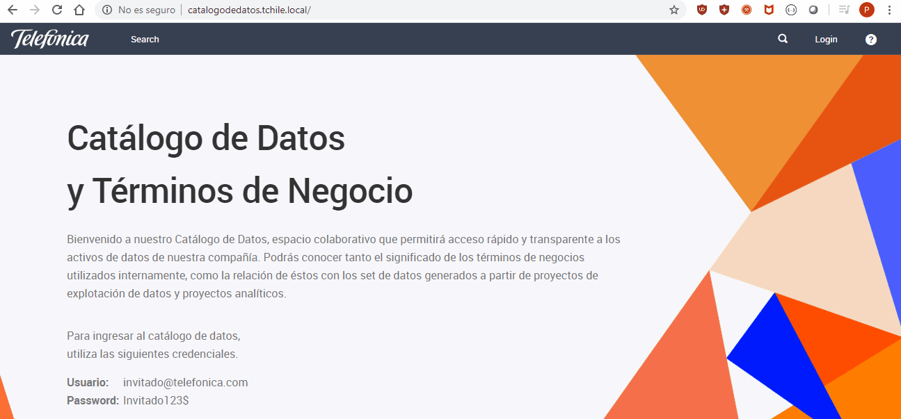
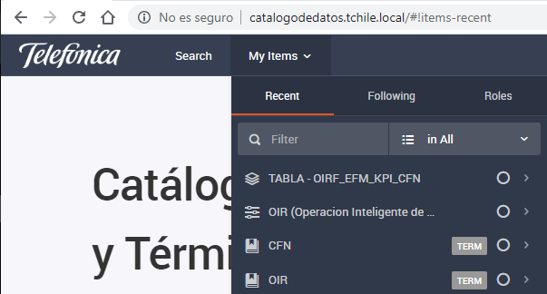

Primeros Pasos
Acceso a la aplicacion
Se puede acceder al catalogo de datos en la siguiente url http://catalogodedatos.tchile.local/ utilizando las credenciales que se encuentran en la parte inferior de la pagina de inicio.

Unison
Luego de acceder te aparecera la opcion "Search" en la parte superior de la herramienta junto con "My Items" donde se muestran las visualizaciones as recientes.

Al ingresar a "Search" podras navegar por los distintos objetos (facets) que se encuentran disponibles para el usuario invitado.